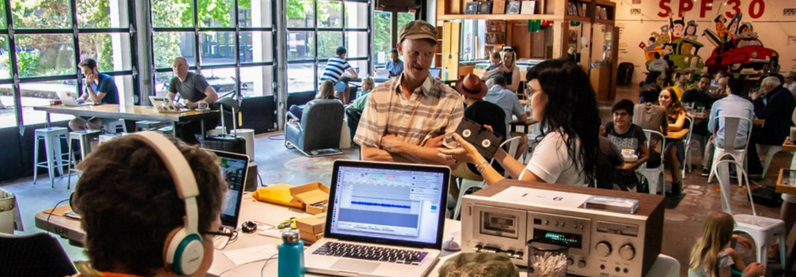

Public Digitization Day: A Case Study
Strategies and Outcomes for Public Digitization Events: A Case Study was a presentation that myself, Libby Hopfauf, Andrew Weaver, and Dylan Flesch gave at the Association of Moving Image Archivists in November 2018. We discussed the planning and execution of a public audiovisual digitization day that was put on by KEXP, Moving Image Preservation of Puget Sound, Washington State University, the University of Washington, and Seattle Public Library. My segment focused on recapping what the event was like (pg. 8-11) and then discussing a later event celebrating Home Movie Day (pg. 20-22). The Home Movie Day event was actually... kind of a failure. We didn't have enough lead time between planning and execution and weren't able to get as many attendees or as much attention as we would have liked. That being said, it was a great opportunity for MIPoPS to make relationships with other AV digitization providers in the area, and we learned what we'll need to do to host a more successful event in the future!